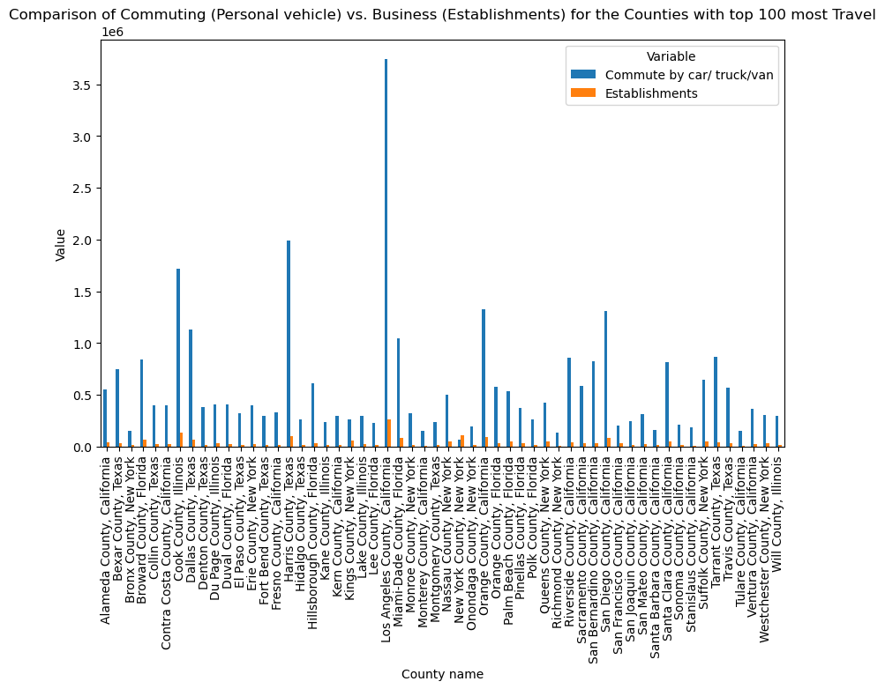
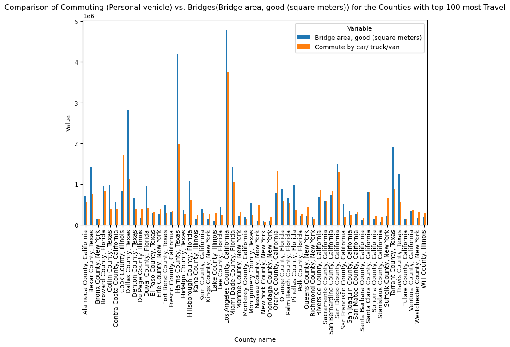
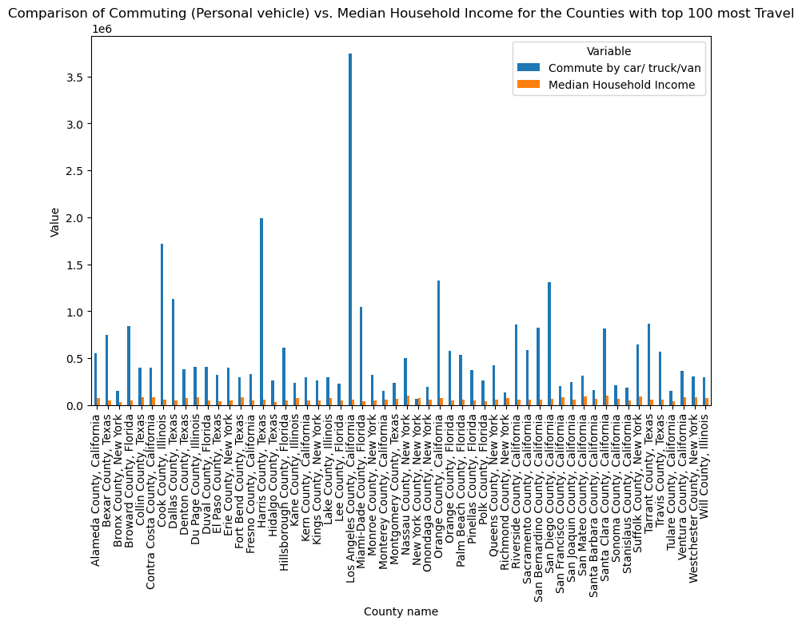
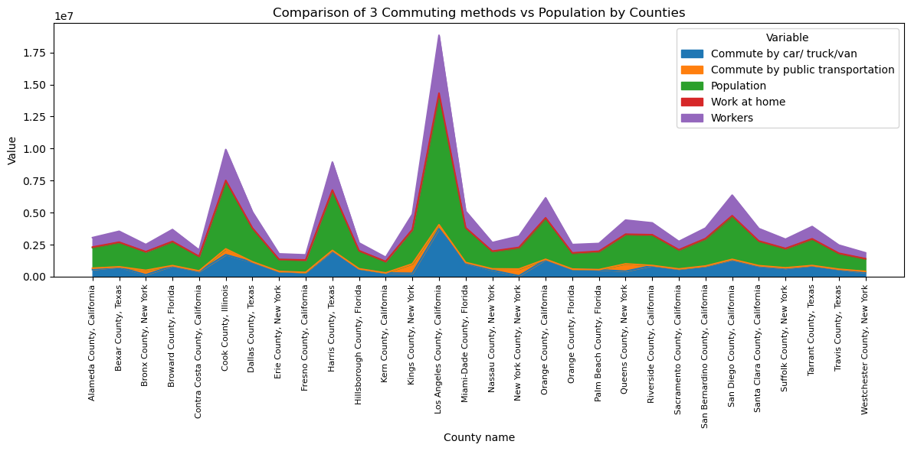
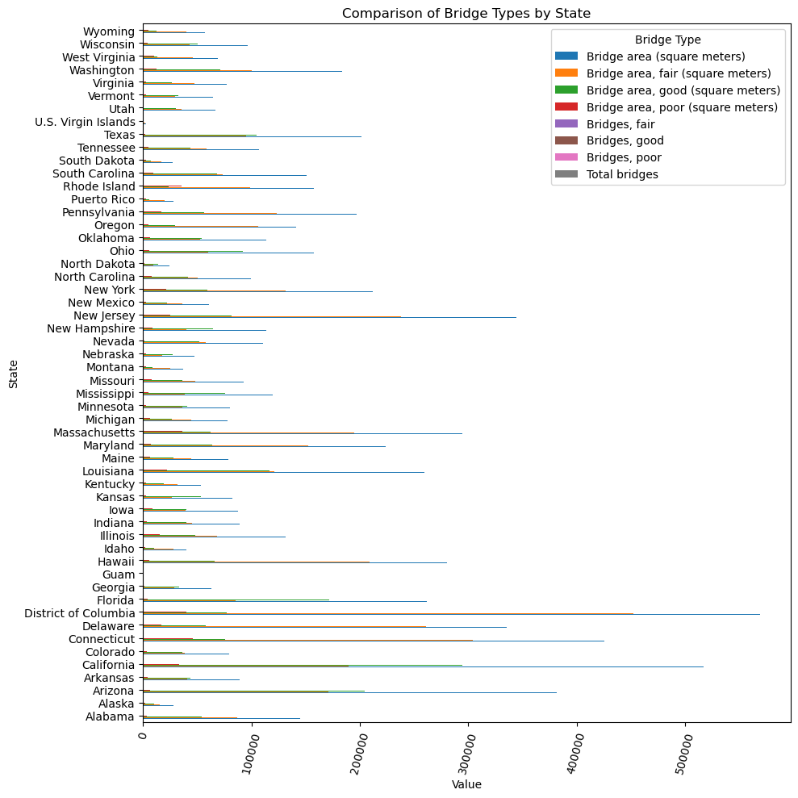

import pandas as pd
import numpy as np
import matplotlib.pyplot as plt
import plotly.express as px
import plotly.figure_factory as ff
import warnings
warnings.filterwarnings('ignore')Viz 5
with open("../data/data.csv", "r") as f:
df = pd.read_csv(f)
df.head()| Level | Category | Variable | County | Date | GEOID | State FIPS | State | Value | Denominator | Denominator Description | Row-ID | Latitude | Longitude | Location | Year | |
|---|---|---|---|---|---|---|---|---|---|---|---|---|---|---|---|---|
| 0 | County | Airports | Total Airports | Grant County, Wisconsin | 01/01/2020 12:00:00 AM | 55043 | 55 | Wisconsin | 9.0 | 9.0 | Total Airports | airports-2020-55043 | 42.867479 | -90.706205 | POINT (-90.706205 42.867479) | 2020 |
| 1 | County | Airports | Total Airports | Taylor County, Florida | 01/01/2020 12:00:00 AM | 12123 | 12 | Florida | 7.0 | 7.0 | Total Airports | airports-2020-12123 | 30.047015 | -83.603520 | POINT (-83.60352 30.047015) | 2020 |
| 2 | County | Airports | Total Airports | Stephens County, Texas | 01/01/2020 12:00:00 AM | 48429 | 48 | Texas | 2.0 | 2.0 | Total Airports | airports-2020-48429 | 32.735872 | -98.836184 | POINT (-98.836184 32.735872) | 2020 |
| 3 | County | Airports | Other airports | Knox County, Maine | 01/01/2020 12:00:00 AM | 23013 | 23 | Maine | 7.0 | 9.0 | Total Airports | other-airports-2020-23013 | 44.155975 | -69.234045 | POINT (-69.234045 44.155975) | 2020 |
| 4 | County | Airports | Primary Airports | Colfax County, New Mexico | 01/01/2020 12:00:00 AM | 35007 | 35 | New Mexico | 0.0 | 5.0 | Total Airports | primary-airports-2020-35007 | 36.606139 | -104.646840 | POINT (-104.64684 36.606139) | 2020 |
filtered_df = df[(df['Category'] == 'Person trips') & (df['Variable'] == 'Total trips')]
print(filtered_df) Level Category Variable County \
338538 County Person trips Total trips Adair County, Kentucky
338541 County Person trips Total trips Cass County, Minnesota
338543 County Person trips Total trips Dundy County, Nebraska
338545 County Person trips Total trips Menard County, Texas
338547 County Person trips Total trips Malheur County, Oregon
... ... ... ... ...
407541 County Person trips Total trips Judith Basin County, Montana
407576 County Person trips Total trips Massac County, Illinois
407577 County Person trips Total trips Orange County, California
407589 County Person trips Total trips Butte County, South Dakota
407596 County Person trips Total trips Caribou County, Idaho
Date GEOID State FIPS State Value \
338538 01/01/2019 12:00:00 AM 21001 21 Kentucky 2.690490e+07
338541 01/01/2020 12:00:00 AM 27021 27 Minnesota 3.458602e+07
338543 01/01/2019 12:00:00 AM 31057 31 Nebraska 2.444445e+06
338545 01/01/2020 12:00:00 AM 48327 48 Texas 2.741053e+06
338547 01/01/2019 12:00:00 AM 41045 41 Oregon 6.099970e+07
... ... ... ... ... ...
407541 01/01/2019 12:00:00 AM 30045 30 Montana 2.284353e+06
407576 01/01/2020 12:00:00 AM 17127 17 Illinois 2.246585e+07
407577 01/01/2020 12:00:00 AM 6059 6 California 3.002547e+09
407589 01/01/2019 12:00:00 AM 46019 46 South Dakota 1.430882e+07
407596 01/01/2020 12:00:00 AM 16029 16 Idaho 6.149330e+06
Denominator Denominator Description Row-ID Latitude \
338538 2.690490e+07 Person trips trips-2019-21001 37.104170
338541 3.458602e+07 Person trips trips-2020-27021 47.117876
338543 2.444445e+06 Person trips trips-2019-31057 40.176201
338545 2.741053e+06 Person trips trips-2020-48327 30.889818
338547 6.099970e+07 Person trips trips-2019-41045 43.193414
... ... ... ... ...
407541 2.284353e+06 Person trips trips-2019-30045 47.045432
407576 2.246585e+07 Person trips trips-2020-17127 37.218970
407577 3.002547e+09 Person trips trips-2020-06059 33.702972
407589 1.430882e+07 Person trips trips-2019-46019 44.905772
407596 6.149330e+06 Person trips trips-2020-16029 42.770497
Longitude Location Year
338538 -85.280620 POINT (-85.28062 37.10417) 2019
338541 -94.280528 POINT (-94.280528 47.117876) 2020
338543 -101.687947 POINT (-101.687947 40.176201) 2019
338545 -99.820600 POINT (-99.8206 30.889818) 2020
338547 -117.623150 POINT (-117.62315 43.193414) 2019
... ... ... ...
407541 -110.266027 POINT (-110.266027 47.045432) 2019
407576 -88.707722 POINT (-88.707722 37.21897) 2020
407577 -117.761070 POINT (-117.76107 33.702972) 2020
407589 -103.507928 POINT (-103.507928 44.905772) 2019
407596 -111.562260 POINT (-111.56226 42.770497) 2020
[6279 rows x 16 columns]aggregated_df = df.groupby('State')['Value'].sum().reset_index()
def abbreviate_states(states):
state_dict = {
'Alabama': 'AL', 'Alaska': 'AK', 'American Samoa': 'AS', 'Arizona': 'AZ', 'Arkansas': 'AR',
'California': 'CA', 'Colorado': 'CO', 'Connecticut': 'CT', 'Delaware': 'DE', 'Florida': 'FL',
'Georgia': 'GA', 'Guam': 'GU', 'Hawaii': 'HI', 'Idaho': 'ID', 'Illinois': 'IL',
'Indiana': 'IN', 'Iowa': 'IA', 'Kansas': 'KS', 'Kentucky': 'KY', 'Louisiana': 'LA',
'Maine': 'ME', 'Maryland': 'MD', 'Massachusetts': 'MA', 'Michigan': 'MI', 'Minnesota': 'MN',
'Mississippi': 'MS', 'Missouri': 'MO', 'Montana': 'MT', 'Nebraska': 'NE', 'Nevada': 'NV',
'New Hampshire': 'NH', 'New Jersey': 'NJ', 'New Mexico': 'NM', 'New York': 'NY', 'North Carolina': 'NC',
'North Dakota': 'ND', 'Northern Mariana Islands': 'MP', 'Ohio': 'OH', 'Oklahoma': 'OK', 'Oregon': 'OR',
'Pennsylvania': 'PA', 'Puerto Rico': 'PR', 'Rhode Island': 'RI', 'South Carolina': 'SC', 'South Dakota': 'SD',
'Tennessee': 'TN', 'Texas': 'TX', 'Utah': 'UT', 'Vermont': 'VT', 'Virgin Islands': 'VI',
'Virginia': 'VA', 'Washington': 'WA', 'West Virginia': 'WV', 'Wisconsin': 'WI', 'Wyoming': 'WY',
'District of Columbia': 'DC'
}
abbreviated_states = [state_dict[state] if state in state_dict else state for state in states]
return abbreviated_states
aggregated_df['State'] = abbreviate_states(aggregated_df['State'])
fig = px.choropleth(
aggregated_df,
locations='State',
color_continuous_scale="Viridis",
locationmode='USA-states',
color='Value',
scope='usa',
title='Choropleth Map based on State Values of Travel Frequency'
)
fig.show()Unable to display output for mime type(s): application/vnd.plotly.v1+jsonfiltered_df = filtered_df[filtered_df['State'].isin(["California", "Texas", "New York", "Florida", "Illinois"])]values=filtered_df['Value']
endpts = list(np.mgrid[min(values):max(values):50j])
fig = ff.create_choropleth(fips=filtered_df['GEOID'], values=values, legend_title='Travel Frequency by County in the top 5 States with most Aggregated Trips')
fig.layout.template = None
fig.update_layout(
legend_x = 0,
annotations = {'x': -0.5, 'xanchor': 'left'}
)
fig.show()Unable to display output for mime type(s): application/vnd.plotly.v1+jsontop_100_values_df = filtered_df.nlargest(100, 'Value')
df_with_top100_travel = df[df['GEOID'].isin(top_100_values_df['GEOID'])]
df_with_top100_travel = df_with_top100_travel[df_with_top100_travel['Category'].isin(['Business', 'Commuting'])]
df_with_top100_travel = df_with_top100_travel[(df_with_top100_travel['Variable'] == 'Establishments') | (df_with_top100_travel['Variable'] == "Commute by car/ truck/van")]pivoted_df = df_with_top100_travel.pivot_table(index='County', columns='Variable', values='Value', aggfunc='first')
pivoted_df.plot(kind='bar', figsize=(10, 6))
plt.xlabel('County name')
plt.ylabel('Value')
plt.title('Comparison of Commuting (Personal vehicle) vs. Business (Establishments) for the Counties with top 100 most Travel')
plt.show()
top_100_values_df = filtered_df.nlargest(100, 'Value')
df_with_top100_travel = df[df['GEOID'].isin(top_100_values_df['GEOID'])]
df_with_top100_travel = df_with_top100_travel[df_with_top100_travel['Category'].isin(['Bridges', 'Commuting'])]
df_with_top100_travel = df_with_top100_travel[(df_with_top100_travel['Variable'] == "Bridge area, good (square meters)") | (df_with_top100_travel['Variable'] == "Commute by car/ truck/van")]Viz 6
pivoted_df = df_with_top100_travel.pivot_table(index='County', columns='Variable', values='Value', aggfunc='first')
pivoted_df.plot(kind='bar', figsize=(10, 6))
plt.xlabel('County name')
plt.ylabel('Value')
plt.title('Comparison of Commuting (Personal vehicle) vs. Bridges(Bridge area, good (square meters)) for the Counties with top 100 most Travel')
plt.show()
income_vs_commute = df[(df['Category'] == "Demographics") | (df['Category'] == "Commuting")]
income_vs_commute = income_vs_commute[income_vs_commute['Variable'].isin(["Median Household Income", "Commute by car/ truck/van"])]
income_vs_commute = income_vs_commute[income_vs_commute['GEOID'].isin(top_100_values_df['GEOID'])]Viz 7
pivoted_df = income_vs_commute.pivot_table(index='County', columns='Variable', values='Value', aggfunc='first')
pivoted_df.plot(kind='bar', figsize=(10, 6))
plt.xlabel('County name')
plt.ylabel('Value')
plt.title('Comparison of Commuting (Personal vehicle) vs. Median Household Income for the Counties with top 100 most Travel')
plt.show()
top_50_values_df = filtered_df.nlargest(50, 'Value')
population_vs_commute = df[(df['Category'] == "Demographics") | (df['Category'] == "Commuting")]
population_vs_commute = population_vs_commute[population_vs_commute['Variable'].isin(["Workers", "Commute by car/ truck/van", "Commute by public transportation", "Work at home","Population" ])]
population_vs_commute = population_vs_commute[population_vs_commute['GEOID'].isin(top_50_values_df['GEOID'])]Viz 8
pivoted_df = population_vs_commute.pivot_table(index='County', columns='Variable', values='Value', aggfunc='first')
ax = pivoted_df.plot(kind='area', figsize=(12, 6), stacked=True)
current_ticks = ax.get_xticks()
current_labels = [item.get_text() for item in ax.get_xticklabels()]
ax.set_xticks(range(len(pivoted_df.index)))
ax.set_xticklabels(pivoted_df.index, rotation='vertical', fontsize=8)
plt.xlabel('County name')
plt.ylabel('Value')
plt.title('Comparison of 3 Commuting methods vs Population by Counties')
plt.tight_layout()
plt.show()
Viz 9
bridge = df[df['Category'] == 'Bridges']
pivoted_df = bridge.pivot_table(index='State', columns='Variable', values='Value', aggfunc='mean')
ax = pivoted_df.plot(kind='barh', figsize=(10, 10))
plt.xlabel('Value')
plt.ylabel('State')
plt.title('Comparison of Bridge Types by State')
plt.xticks(rotation=75)
plt.legend(title='Bridge Type')
plt.tight_layout()
plt.show()